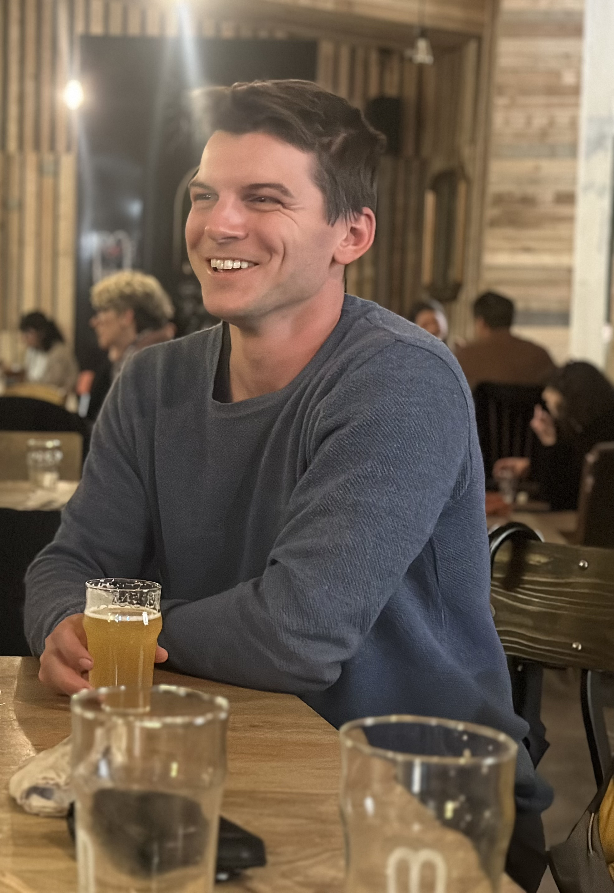
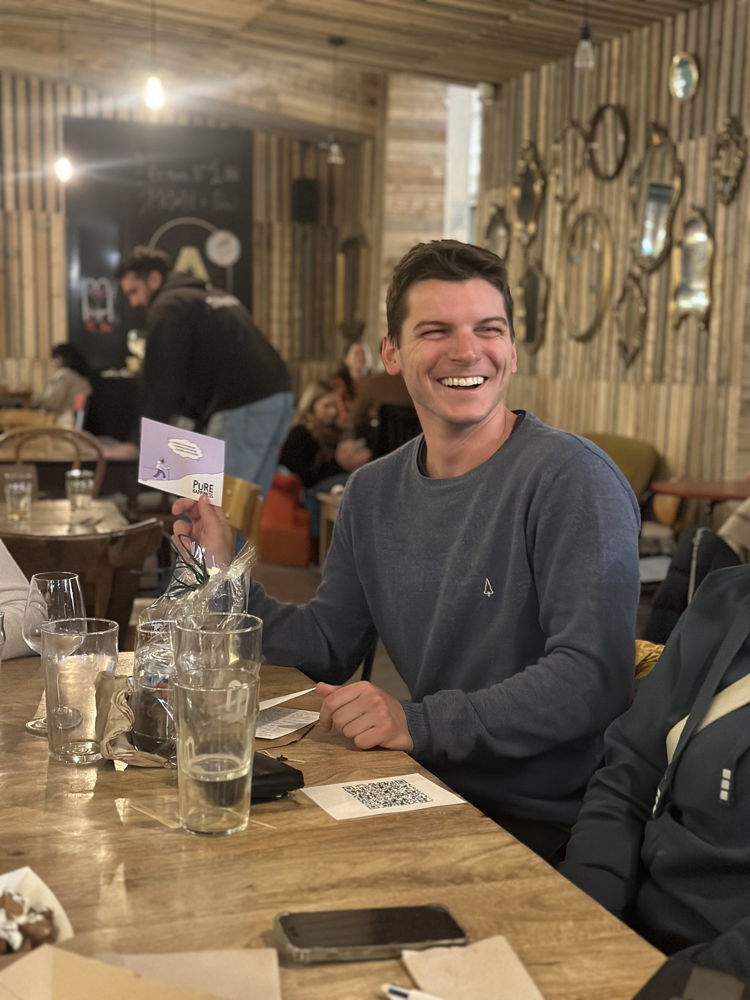

Merci Sébastien
Bon ride, Sébastien
Toute l'équipe te souhaite le meilleur pour la suite. Ton énergie, ton professionnalisme et ta bonne humeur vont nous manquer, mais on est surtout très heureux pour cette nouvelle aventure qui t'attend.

Tu recevras prochainement un virement bancaire provenant d'une cagnotte de 250 EUR que nous avons créée ensemble pour te remercier.
Merci pour tout ce que tu as apporté au quotidien. On te souhaite beaucoup de réussite, de beaux projets, et surtout beaucoup de joie pour la suite.
Avec toute notre reconnaissance,
Tes collègues
